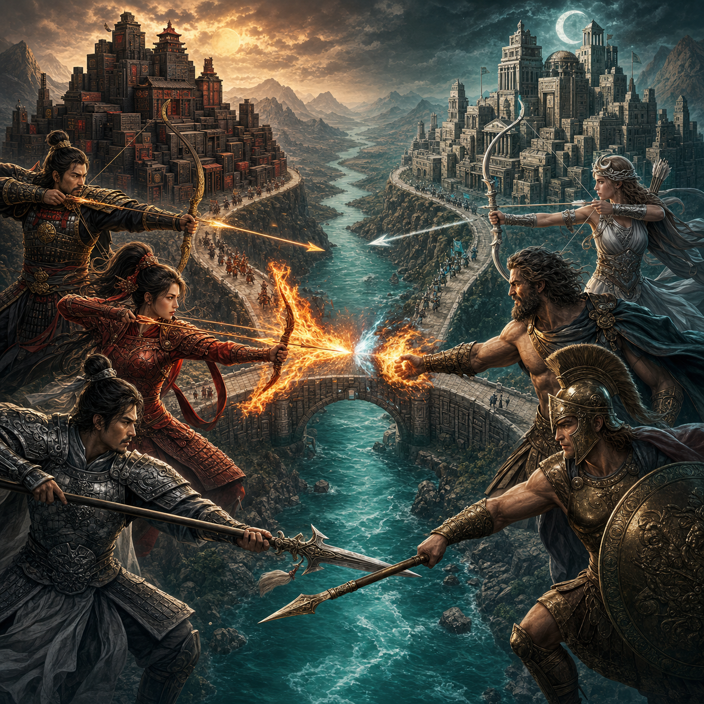
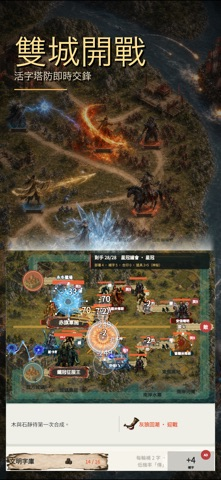
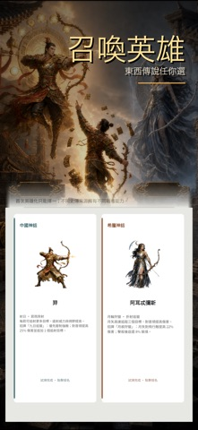
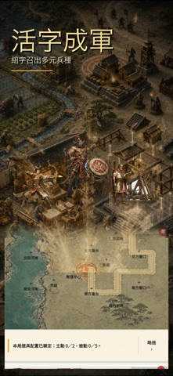
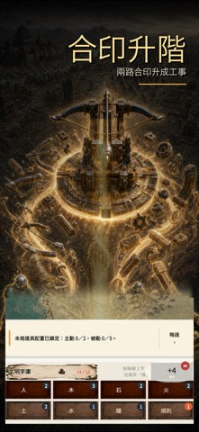
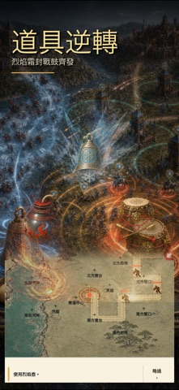
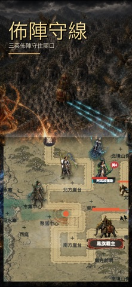
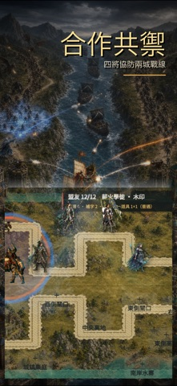
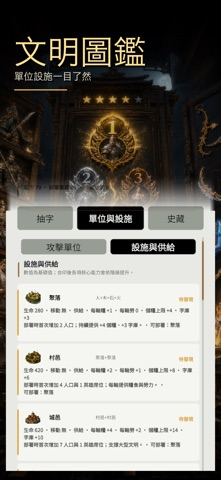

活字成軍
收集並配置活字，讓文字不只是資源，而是能上場迎敵的文明力量。

合成單位、工事與英雄，在雙城競爭、合作守城與無盡敵潮中部署你的文明防線。每一枚字，都是下一場戰役的可能。


從一枚活字開始，逐步合成兵種、工事與英雄。你需要在有限資源、雙城戰線與不斷逼近的敵潮之間，做出真正有重量的部署。
收集並配置活字，讓文字不只是資源，而是能上場迎敵的文明力量。
組合活字與兵種，解鎖更高階單位，在關鍵時刻扭轉戰線。
依東西方文明選擇英雄與能力，建立屬於你的防守節奏。
競爭、合作、守城與無盡模式交錯，讓每一局都有不同壓力與故事。
商店中的完整宣傳素材集中在這裡，不裁切、不塞進作品集小卡，讓角色、地圖、合成與戰術畫面保留原本比例。






戰鬥不是單純堆疊數值。你需要看懂敵潮、地形、城防與合成路線，在最少步數內建立最有效率的文明防線。
確認敵人方向、屬性與抵達時間，先找出最危險的缺口。
選擇當下需要的兵種、工事或資源，保留下一次合成的空間。
升階單位、啟動英雄或使用道具，在壓力最高時改變戰局。
原有《河谷篇》第六版攻略已完整併入 APP 介紹頁。真正要管理的不只是火力，而是字庫、人口、糧食、勞力、金幣、科技與英雄席位之間的取捨。
每輪用補進字庫的活字合成部署印、把單位放到能覆蓋路線的位置、支付維持與研究成本，再依敵人改道即時換陣。第 12 輪只是第一卷首領，之後敵潮會持續增強直到人口歸零。
| 配方或升階 | 結果 | 用途 |
|---|---|---|
| 木＋石 | 工具 | 每輪提供勞力，也是獵手前置。 |
| 人＋木＋石＋火 | 聚落 | 部署後增加人口、儲糧與字庫容量。 |
| 人＋工具 | 獵手 | 高地單體火力，可升弓手與火箭手。 |
| 人＋石 | 投石手 | 範圍清群，可升砲石手。 |
| 人＋木 | 矛衛 | 直線貫穿，可升弩手並銜接床弩。 |
| 人＋土 | 陷阱師 | 控制快敵與首領，可升網手。 |
| 人＋陶器 | 戰鼓手 | 強化附近單位，可升旗手。 |
| 人＋規則 → 人＋法律 | 法律 → 學者 | 研究與制度路線的起點。 |
| 學者＋工具＋規則 | 學院 | 第 6 輪起建立中期科技核心。 |
| 秘法師＋霜法師 | 秘法塔 | 第 14 輪起提供大範圍陸海空火力。 |
| 傳＋法律＋石＋規則 | 英令碑 | 第 8 輪起，首次部署增加英雄席位。 |
| 舟×2 → 戰槳船×2 | 戰槳船 → 巡防艦 | 第 21 輪後的補給、貫穿與海防重砲。 |
| 敵種 | 特徵 | 可靠對策 |
|---|---|---|
| 群襲 | 血少、速度快、數量多 | 範圍、貫穿與木牆聚路。 |
| 重甲 | 血厚、突破傷害高 | 單體主攻、緩速與科技加成。 |
| 飛行 | 直線飛向聚落，不走地面彎路 | 遊俠、長弓、床弩與秘法。 |
| 船團 | 沿西側水路進攻 | 戰槳船、巡防艦與霜法師。 |
| 首領 | 每 6 輪出現並持續升階 | 控制、先清護衛、把最後一擊留給英雄候選者。 |
上方常駐列提供 Google Play 與 App Store 雙平台下載入口。